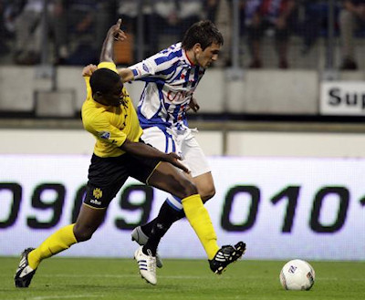
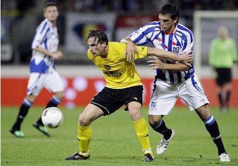
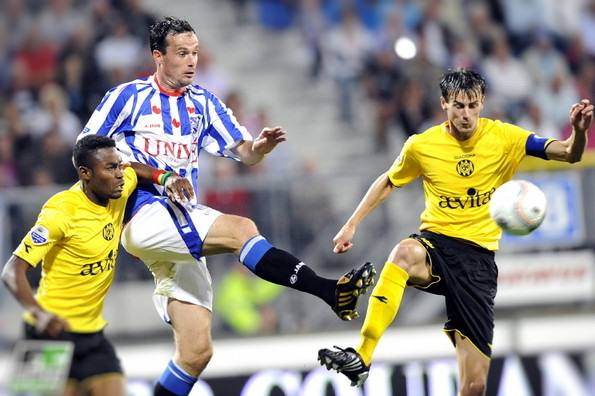
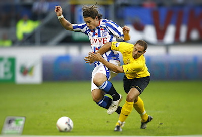
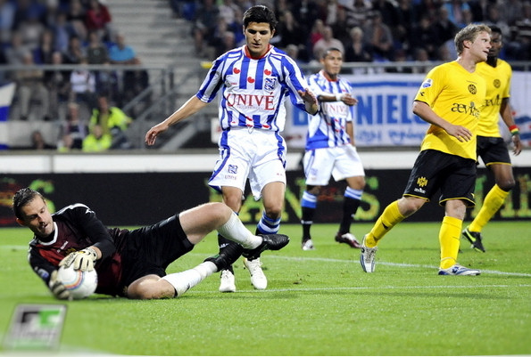

|
SC Heerenveen -
Roda JC (0-0) 31 juli 2009 |
Roda JC heeft in het eerste competitieduel van het seizoen één
punt mee naar Kerkrade genomen. Het bleef 0-0. Tegen Heerenveen dwong
Roda in de eerste helft nauwelijks kansen af en was de Friese ploeg met
mogelijkheden voor Papadopulus, en Sibon gevaarlijk. Maar tot
een doelpunt kwam het niet. De beste kans voor Roda kwam van Van Tornhout die
net voorlangs kopte na een corner van Linssen.
In de tweede helft kwam de Friese ploeg feller uit de kleedkamer en dat leverde
bijna een doelpunt op door Beerens die vrij voor het doel van
Castro kwam. Ook Roda kreeg kansen zoals in de 76ste minuut toen Bodor dichtbij
een doelpunt was. Doelman Bram Castro hield zijn
ploeg een aantal keer op de been met goede reddingen. Hij kreeg in de 56ste
minuut hulp van Marcel de Jong die de bal van de lijn haalde.

Sutchuin.

Van Tornhout speelde in de spits met de vrij onzichtbare Junker.

Sibon scoorde ooit voor Roda (bekerfinale 1997) maar daarna nooit meer in duels
tussen RJC en HEE.

Bodor is inmiddels een dragende speler geworden bij Roda.

De Jong liep tegen een gemakkelijk gegeven gele kaart.

Het geelzwarte deel van de 26.000 toeschouwers.